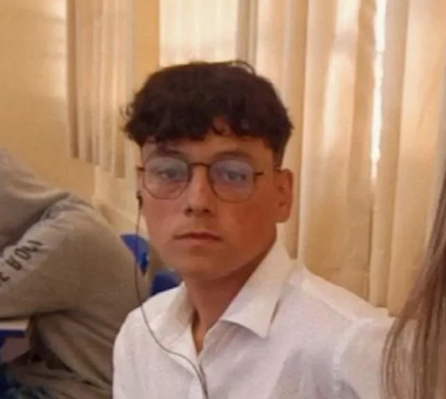

Conheça Nossa Equipe
Pessoas apaixonadas que tornam tudo possível.
Cauã
Desenvolvedor
Sou um jovem de 20 anos, Estudante da FATEC desde 2023, Cursei Sistemas para internet (SI), atualmente cursando Desenvolvimento de Software de Multiplataforma (DSM). Sendo desenvolvedor primário da Workly.
GitHub

Jose
Design/Figma
Me chamo José Antonio, atualmente estudante da FATEC - JAU, no curso de Desenvolvimento de Software de Multiplataforma. Atuando significamente na parte do design da Workly.
GitHub - Linkedin
Pedro
Documentação
Sou um jovem de 18 anos, Estudante do curso de Desenvolvimento de Software Multiplataforma da FATEC Jaú.
GitHubLuiz
Documentação
Sou Luiz Gabriel, tenho 18 anos e encontro-me atualmente realizando o curso de Desenvolvimento de Software de Multiplataforma na FATEC - JAU.
GitHub